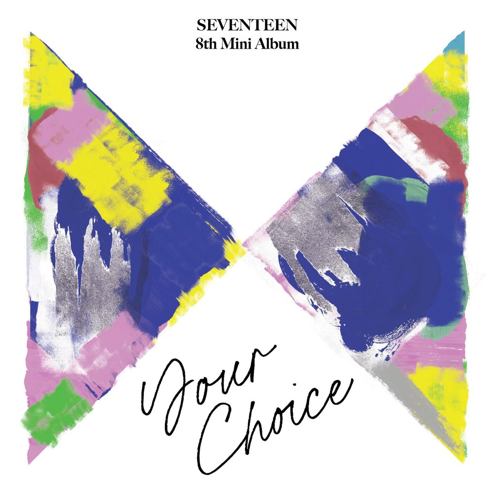
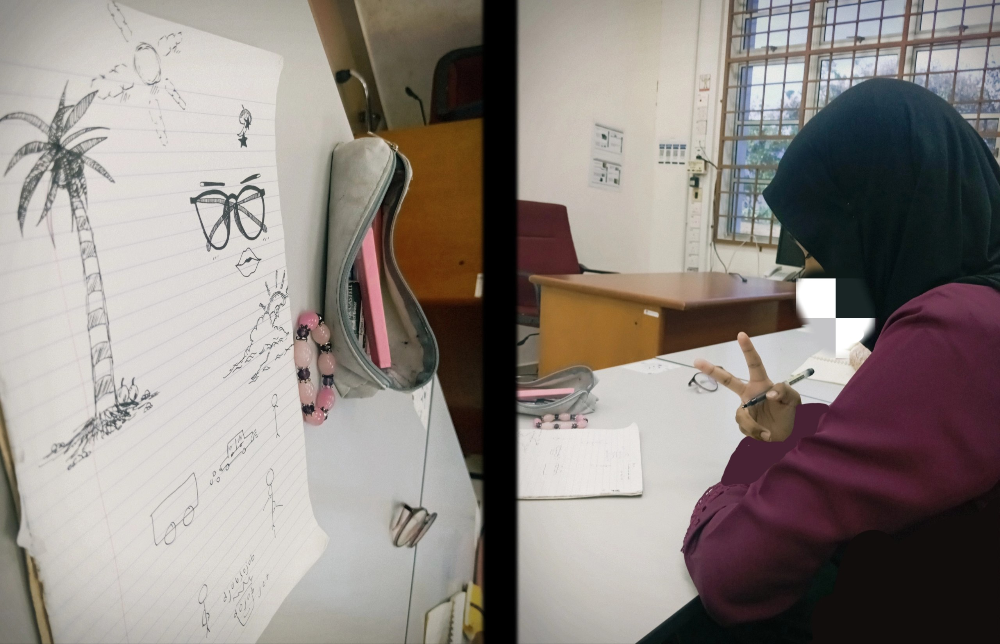

My Favorite Hobbies 💜

Listening To Music ⋆.˚✮🎧✮˚.⋆
I really enjoy listening to good music ♬⋆.˚ In the past, I was quite picky when it came to choosing songs to listen to. However, as time passed, I became more open to exploring different genres of music. Since I was little, I have enjoyed listening to K-pop songs. I may not always understand the lyrics, but I think that is exactly what draws me to them. I may not understand words in the songs, but the melody, the vocals, and the way the artists perform their songs make me feel something that is quite difficult to explain.
As you can see below, I have included one of the songs that brings me comfort and joy whenever I listen to it. Enjoy! (Heaven's Cloud by SEVENTEEN) 🎧

Drawing ˙𐃷˙
Drawing definitely helps me portray my thoughts. When I feel frustrated or angry about something, my drawings often reflect those emotions. But when I'm happy, my drawings tend to be neater, more detailed, and sometimes even look better.
I'm not particularly good at drawing, and there are times when I want to draw so badly, but my hand just won't move. It feels draining. Yet, there are also moments when drawing helps ease my mind and brings me comfort.
I think that to draw something, I need to be ready and in the right state of mind. If I'm not, not even a single scratch will appear on the paper.
Looking at the star/cloud/sky ⋆˚☆˖°⋆｡° ✮˖ ࣪ ⊹⋆.˚
At night, I always look up at the sky and try to find the stars. Sometimes they're there, and sometimes they're not.
To me, the stars look like tiny dots that complete the sky. Without them, I always feel like the sky needs something to fill the emptiness, as if something is missing. The happiness I feel when I see the stars is unbelievable.
I really like stars, I guess. However, whenever I look at the stars and try to capture them in a photo, they never look as beautiful as they do in real life because of my camera quality, which makes me a little sad.
Still, I am grateful that my phone can capture the beauty of the sky and clouds clearly. ⋆｡‧˚ʚ🧸ɞ˚‧｡⋆